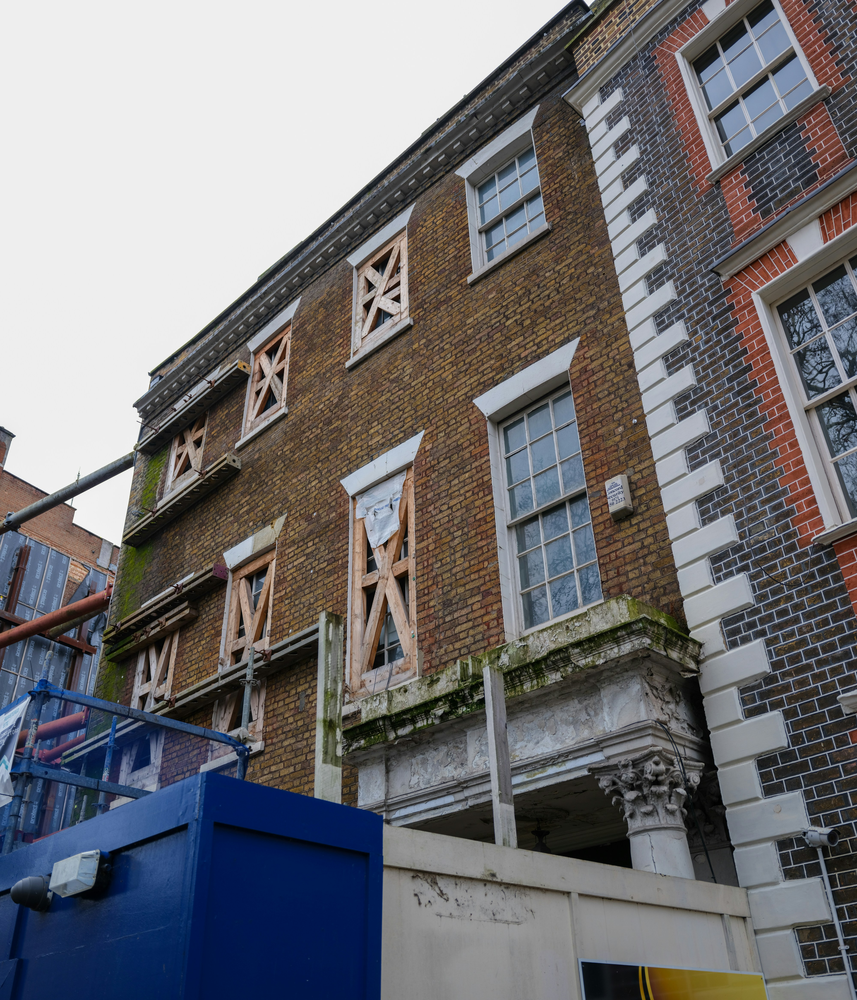

Rahmen
Leistung, Bestand und Bauaufgabe werden klar eingeordnet.
Für Rohbau, Sanierung, Umbau und Projektbegleitung in Berlin: belastbare Bauleistungen, geordnete Abläufe und eine professionelle Umsetzung, die Projekte nachvollziehbar führt und sauber zum Abschluss bringt.


Diese Konzeptseite positioniert ein Bauunternehmen nicht über Lautstärke, sondern über Struktur, Präsenz und saubere Projektführung. Leistungen bleiben früh klar. Der Eindruck bleibt ruhig, belastbar und auf echte Umsetzung ausgerichtet.
Leistung, Bestand und Bauaufgabe werden klar eingeordnet.
Bauphasen bleiben abgestimmt, nachvollziehbar und sauber geführt.
Umsetzung wirkt professionell, weil sie geordnet zum Ergebnis führt.
Der Leistungsbereich bleibt ruhig, präzise und ohne visuelle Unruhe. Rohbau, Sanierung, Umbau und Projektbegleitung sind sofort erkennbar und tragen die Seite von Beginn an.
Tragende Bauleistungen mit Fokus auf Stabilität, Struktur und fachlich sauberer Ausführung.
Professionelle Weiterentwicklung und Modernisierung bestehender Gebäude mit Blick auf Bestand, Substanz und Ablauf.
Veränderungen im Bestand mit klarer Planung, geordnetem Ablauf und sauberer baulicher Umsetzung.
Abstimmung, Kommunikation und nachvollziehbare Bauphasen als zentrales Vertrauenselement im Projekt.
Gerade bei Bauprojekten in Berlin entsteht Qualität nicht nur auf der Baustelle, sondern in der Führung des Projekts. Klare Bauphasen, verlässliche Kommunikation und abgestimmte Umsetzung machen aus Leistung einen professionellen Ablauf.
Bestand, Aufgabe und Leistungsrahmen klären.
Phasen, Zuständigkeiten und Entscheidungen ordnen.
Gewerke und Baufortschritt sauber koordinieren.
Projekt geordnet und nachvollziehbar übergeben.



Sanierung und Umbau im Bestand verlangen einen anderen Blick als reine Neubau-Logik. Diese Sektion hält die Balance zwischen fachlicher Glaubwürdigkeit und ruhiger Premium-Anmutung: Bestandsgebäude werden strukturiert entwickelt, nicht dramatisiert.
Diese Sektion fasst die gestalterische und inhaltliche Logik sichtbar zusammen: Vertrauen entsteht über Struktur, Leistungsfähigkeit, Nutzerführung und einen starken Auftritt auf allen Geräten.
Ruhige Hierarchie, belastbare Inhalte und klare Abschnittsführung statt Werbedruck.
Rohbau, Sanierung, Umbau und Projektbegleitung werden früh und gleichwertig geführt.
Von Hero bis Abschluss bleibt die nächste Handlung präzise und unaufdringlich erkennbar.
Weißraum, Typografie und Medienführung bleiben auch mobil hochwertig und kontrolliert.
Der Ablauf bleibt bewusst knapp. Jeder Schritt dient Orientierung und macht die Projektführung sofort plausibel.
Projekt, Bestand und Zielbild klären.
Leistungen, Bauphasen und Schnittstellen ordnen.
Rohbau, Sanierung oder Umbau professionell führen.
Ergebnis sauber übergeben und klar kommunizieren.
Statt vieler kleiner Referenzbausteine zeigt der Case einen bewusst formulierten Konzeptfall für eine Berliner Bestandsfassade mit Sanierung, Umbau-Logik und klarer Projektbegleitung.
Ein Bestandsgebäude mit Sanierungsbedarf, gestaffelten Eingriffen und hoher Abstimmungsanforderung im urbanen Kontext.
Rohbauergänzungen, Bestandsanpassungen und Umbauphasen so koordinieren, dass das Projekt strukturiert lesbar bleibt.
Gerüst, Baukörper und Phasen werden nicht als Chaos, sondern als geordneter Fortschritt inszeniert.
Ein Portfolio-Case, der Substanz, Projektführung und architektonische Ruhe sichtbar zusammenführt.
Ja, die Positionierung ist klar auf Berlin ausgerichtet und spricht Bauprojekte in der Stadt mit präzisem lokalem Bezug an.
Ja, Bestand ist ein zentraler Teil der Seite und wird als strukturierte, professionelle Bauaufgabe formuliert.
Ja, Projektbegleitung ist bewusst als Vertrauenselement aufgebaut und umfasst Kommunikation, Abstimmung und nachvollziehbare Bauphasen.
Nein, die Seite führt Rohbau, Sanierung, Umbau und Projektbegleitung gleichwertig als zusammenhängendes Leistungsspektrum.
Ja, neben Wohn- und Bestandsprojekten werden ausgewählte Gewerbeprojekte glaubwürdig mitgedacht.
Diese Portfolio-Konzeptseite verbindet marktgerechte Bausprache mit einer ruhigen, präzisen Premium-Gestaltung. Sie bleibt fachlich glaubwürdig, zeigt Projektführung sichtbar mit und wirkt bis zum Schluss wie ein bewusst kuratiertes Agentur-Showcase.